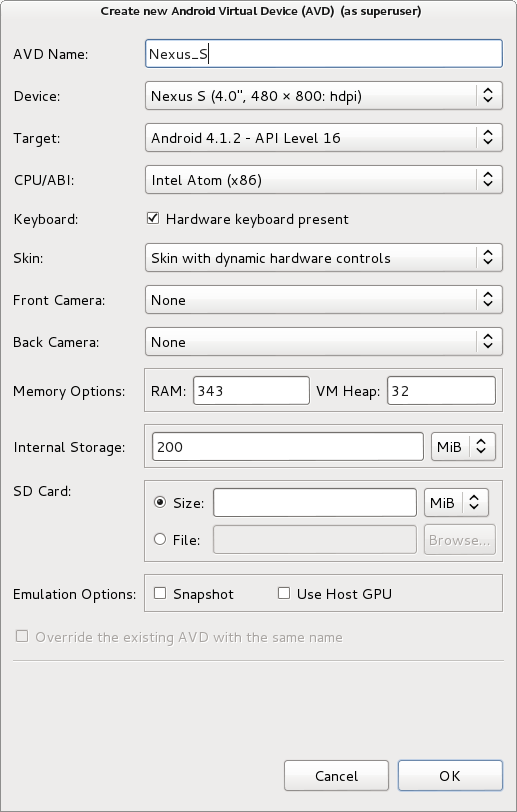

AVD (Android Virtual Device)
Ca alternativă la Genymotion, pot fi configurate dispozitive virtuale care vor fi rulate folosind emulatorul standard din cadrul SDK-ului de Android. De regulă, acestea sunt mai lente, consumă mai multă memorie și nu oferă la fel de multe facilități cu privire la funcționalitățile dispozitivului propriu-zis.
Configurarea unui dispozitiv virtual se face prin intermediul aplicației Android Virtual Device (AVD) Manager, livrată împreună cu SDK-ul Android.
Linux
student@eim2016:~$ cd /opt/android-sdk-linux/tools/ student@eim2016:~$ sudo ./android avd
Windows
C:\Users\Eim2016>cd "C:\Program Files (x86)\Android\android-sdk" C:\Program Files (x86)\Android\android-sdk> "AVD Manager.exe"
Utilitarul listează toate dispozitivele virtuale Android, oferind totodată posibilitatea de a crea unele noi.

Procesul de configurare a unui dispozitiv virtual Android implică specificarea următoarelor proprietăți:
- denumire (AVD Name): caracterele permise sunt litere minuscule / majuscule (a-z, A-Z),
.,_și-. - dispozitiv virtual (Device): se alege dintr-o listă în care fiecare dispozitiv virtual este identificat prin dimensiunea ecranului (diagonală exprimată în inchi, rezoluție exprimată în pixeli - lungime x lățime, densitate:
ldpi,mdpi,hdpi,xhdpi,xxhdpi,tvdpi) - nivelul de API care va fi folosit (Target), în funcție de ceea ce a fost instalat anterior
- tipul de procesor (CPU/ABI):
ARM (armeabi-v7a),MIPS (mips),Intel Atom (x86) - posibilitatea de a folosi tastatura sistemului gazdă (Keyboard) este activată în cazul în care este selectată opțiunea Hardware keyboard present
- tipul de interfață grafică (Skin)
- utilizarea unor dispozitive ale sistemului gazdă pentru camerele dispozitivului virtual (Front Camera, Back Camera)
- valorile corespunzătoare pentru dimensiunea memoriei RAM și a heap-ului (Memory Options)
- valoarea corespunzătoare spațiului de stocare pe discul local (Internal Storage)
- informații cu privire la cardul de memorie (SD Card): dimensiune (exprimată în MB), fișier din cadrul sistemului gazdă care să îi reflecte conținutul
- opțiuni legate de emulare (Emulation Options)
- Snapshot - permite ca starea dispozitivului virtual să fie stocată, astfel încât acesta să pornească mai rapid ulterior
- Use Host GPU - folosirea unității de procesare grafică a sistemului gazdă

Rezultatele procesului de configurare a dispozitivului virtual pot fi vizualizate într-o fereastră care rezumă proprietățile specifice:

$HOME/.android/avd, pentru fiecare dintre acestea fiind stocat un fișier .avd și un fișier .ini (care conțin toate proprietățile dispozitivului virtual, acestea putând fi modificate și manual).
Pentru fiecare dispozitiv virtual din listă, există mai multe opțiuni:
- lansare în execuție (Start…)
- editarea configurației (Edit…)
- restaurare (Repair…) - în situația în care dispozitivul virtual nu a putut fi încărcat
- ștergere (Delete…)
- vizualizarea configurației (Details…)

Lansarea în execuție poate fi realizată:
- prin accesarea butonului Start… corespunzător unui dispozitiv virtual
- prin intermediul utilitarului
emulatoraflat în subdirectorultoolsal SDK-ului Android
Linux
student@eim2016:~$ cd /opt/android-sdk-linux/tools/ student@eim2016:~$ sudo ./emulator @Nexus_S
Windows
C:\Users\Eim2016>cd "C:\Program Files (x86)\Android\android-sdk\tools" C:\Program Files (x86)\Android\android-sdk\tools> emulator @Nexus_S
emulator trebuie rulat cu opțiunea -force-32bit.
Opțiunile prin care poate fi controlată lansarea în execuție sunt:
- scalarea ecranului la dimensiunea reală (specificându-se dimensiunea ecranului - exprimată în inchi și rezoluția acestuia - exprimată în dpi)
- ștergerea datelor utilizatorului de pe discul local al dispozitivului virtual
- rularea pornind de la o stare anterioară (eng. snapshot)
- stocarea stării dispozitivului virtual

Emulatorul furnizat împreună cu SDK-ul Android conține o secțiune a ecranului și o secțiune a controalelor utilizatorului (butoane pentru controlul volumului, pornire/oprire, tastele home / menu (meniu contextual) / back / search și un pad cu tastele direcționale (de regulă, dezactivat).